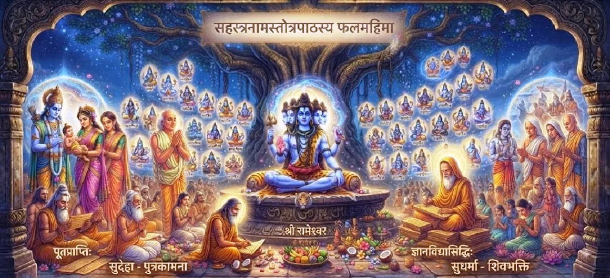

The Fruits of Reciting the Sahasranama
The thirty-seventh chapter of the Kotirudra Samhita expounds upon the immense spiritual, mental, and material rewards gained by devotees who chant the Shiva Sahasranama.
This chapter highlights how the vibrations of Mahadeva's thousand names transform the devotee's life, granting ultimate peace and liberation.
Chapter 37 Highlights
Divine Rewards
The phala or fruits of faithful recitation.
Karma Cleansing
Eradicating past sins through holy vibrations.
Protection & Peace
Shielding the devotee from fear and distress.
Spiritual Wisdom
Awakening inner clarity and divine understanding.
Material Prosperity
Grace in worldly endeavors and well-being.
Ultimate Moksha
Attaining liberation in the abode of Shiva.
Core Topics in This Chapter
Blessings of Regular Recitation
The text details how individuals who chant the Shiva Sahasranama with devotion and purity of heart receive boundless blessings from Mahadeva.
No endeavor of a sincere devotee remains unrewarded.
Destruction of Sins and Negative Karma
Just as fire consumes dry wood, the chanting of the thousand names burns away accumulated sins, impurities, and adverse karmic reactions.
The devotee becomes purified and light in spirit.
Mental Peace and Fearlessness
Reciting these sacred names dispels anxiety, fear of death, and mental distress, replacing them with profound inner tranquility and courage.
The devotee rests securely in the protection of Shiva.
Attainment of Higher Wisdom
The Sahasranama sharpens the intellect, bestows true knowledge, and unveils the underlying unity of the universe under Mahadeva's command.
Ignorance is dispelled by the light of divine names.
Material and Spiritual Success
While spiritual liberation is the ultimate fruit, devotees also experience grace in worldly responsibilities, health, and harmonious relationships.
Both bhukti (enjoyment/prosperity) and mukti (liberation) are attained.
Transition to Chapter 38
Having explained the rewards of chanting the Sahasranama, the narrative seamlessly transitions to Chapter 38 to glorify the greatness of true Shiva devotees.
Readers are invited to continue to Chapter 38.
Key Teachings of Chapter 37
Guaranteed Fruits
Every sincere recitation yields divine results.
Karmic Cleansing
Burning away sins like fire consumes fuel.
Fearlessness
Freedom from anxiety and existential dread.
Wisdom & Clarity
Illuminating the mind with higher truths.
Prosperity
Grace covering both worldly and spiritual needs.
Path to Moksha
Culminating in eternal union with Shiva.
Spiritual Reflection
The fruits of reciting the Shiva Sahasranama outlined in Chapter 37 serve as a powerful encouragement for spiritual seekers. Chanting is not merely an empty ritual, but an inner alchemy that transmutes our heavy karmic burdens into pure devotion. When we dedicate our voice and mind to the thousand names of Mahadeva, we invite divine grace into every aspect of our existence—clearing our fears, illuminating our intellect, and guiding us gently toward liberation. May this sacred knowledge inspire us to maintain a steady practice of remembrance, trusting that every sacred name uttered brings us closer to our divine source.
Living the Message of Chapter 37
Trust in the transformative power of chanting and make the Shiva Sahasranama a regular part of your spiritual discipline.
Approach your daily recitation with faith, knowing that it purifies the mind, removes obstacles, and brings inner peace.
Let the fruits of devotion manifest naturally as peace and clarity in your life.
Key Spiritual Concepts
The spiritual and material results of righteous action.
Eradicating past negative impressions through sound vibration.
Freedom from existential dread and mental anxiety.
Worldly well-being paired with ultimate liberation.
The transformation of ordinary consciousness into divine awareness.
The protective umbrella of Mahadeva's blessing.
Chapter Summary
Kotirudra Samhita Chapter 37 outlines the extensive rewards of reciting the Shiva Sahasranama. It assures devotees that faithful chanting destroys accumulated sins, dispels fear, grants mental peace, sharpens wisdom, and provides both material success and ultimate moksha, paving the way to Chapter 38 on the greatness of Shiva devotees.
Frequently Asked Questions
1. What is the central theme of Kotirudra Samhita Chapter 37?
Chapter 37 enumerates the spiritual, mental, and material rewards (phala) obtained by devotees who recite the Shiva Sahasranama with faith and regularity.
2. How does this chapter follow the previous one?
After introducing the thousand names of Shiva in Chapter 36, Chapter 37 naturally explains the benefits and blessings that result from chanting them.
3. What are the primary benefits of chanting the Shiva Sahasranama according to this chapter?
Benefits include the destruction of sins, acquisition of wisdom, peace of mind, protection from fear, and ultimate liberation (moksha).
4. What is the next chapter after this one?
The next chapter is Chapter 38, 'The Greatness of Shiva Devotees'.
“The chanting of the thousand names of Shiva burns away all sins and grants the seeker both worldly well-being and eternal liberation.”
Continue Through Kotirudra Samhita
Chapter 37 explores the fruits of reciting the Sahasranama. Continue to Chapter 38, The Greatness of Shiva Devotees.